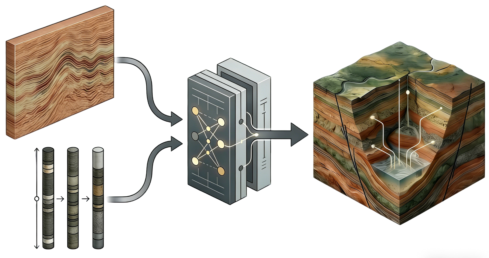
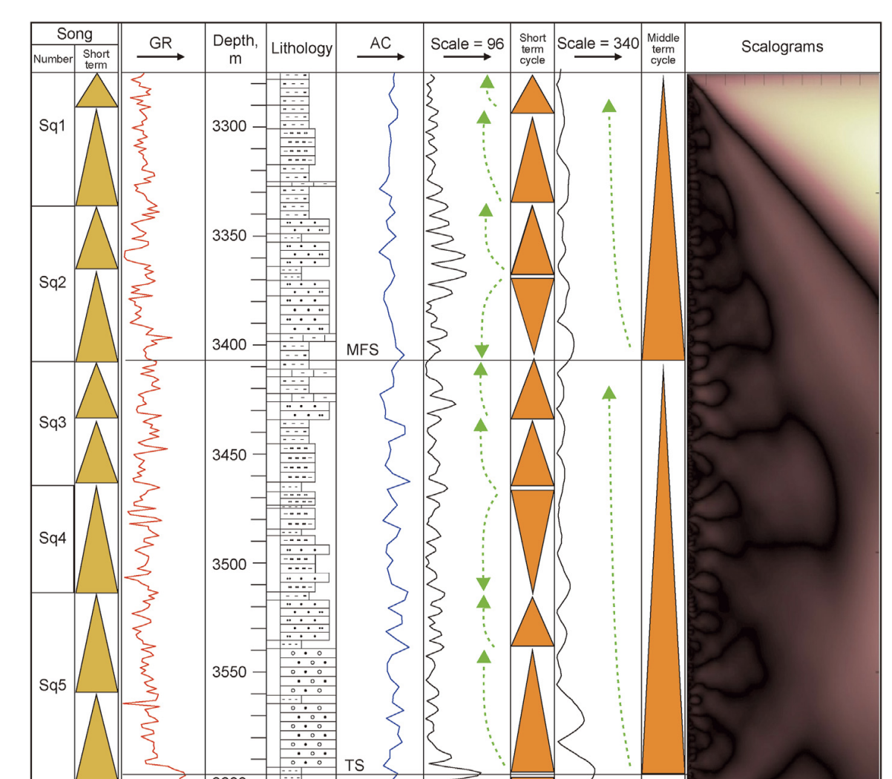
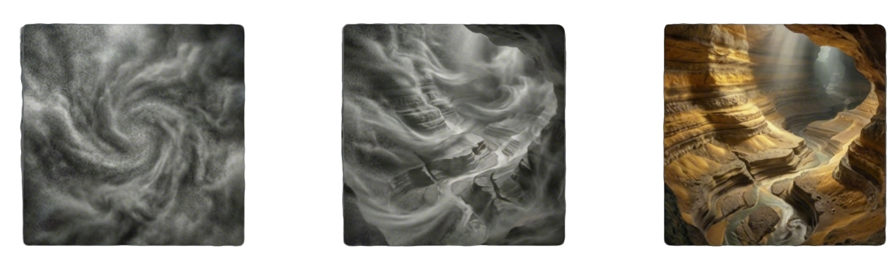
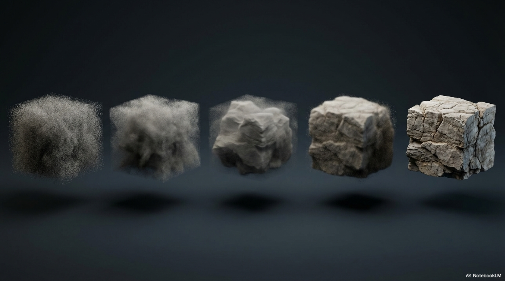

AI与机器学习
在气田开发地质建模中的应用
从测井曲线到三维地质模型
AI/ML 全流程实践
一条由数据驱动的建模链
多源数据融合 · 每一步为下一步提供语境
相互依存，不可跳过

地震/测井数据
Well Logs
GR · RT · DEN · CNL 多条曲线连续记录地层物性变化
岩相分类
Facies Classification
LSTM / BiLSTM / Transformer 序列建模识别沉积相
相图生成
Facies Map Generation
MPS -> Diffusion
建模自动化
Workflow Automation
WLFM 基础模型 · AutoML · 集成量化解释
从逐点预测到序列建模
逐点分类方法擅长识别“这个点像什么”，却不擅长理解“这一段地层正在如何演化”。真正缺失的不是精度数字，而是地层上下文。
传统逐点预测的局限
随机森林、XGBoost 把每个深度点都当成独立样本，能给单点打标签，却无法理解整段地层的垂向演化。
统计上优秀，但单点预测彼此割裂。
对上覆、下伏层位没有连续理解。
像是读一本书时，每次只允许看一个词。词或许识别对了，但句子语义、上下承接与地层演化规律全部丢失。
表面上每个点都完成了分类，但真正需要的是：这一串点能否共同构成一个合理、连续的沉积旋回。
真正缺失的是什么？
无法区分"进积型"与"退积型"序列中相同岩性的成因差异。
预测结果逐点跳变，不连续，不符合沉积旋回规律。
地层"记忆"在逐点采样中完全丢失，薄层边界无法精确定位。
LSTM
先让模型具备“记住前文”的能力，把深度序列从离散点重构为有上下文的地层段。
- 门控机制保留长程地层依赖；
- 能识别从冲刷面到顶部细粒沉积的完整河道序列。
BiLSTM
再把“上文”和“下文”同时纳入判断，让某一深度点的解释由整段地层共同决定。
- 从浅到深、从深到浅双向处理；
- 结合 2D ResNet 提取薄互层多尺度特征。
Transformer
最后用自注意力直接连接任意深度点，把长距离地质依赖显式纳入计算。
- 任意位置间直接建模相关性；
- 更适合超长测井序列与复杂沉积旋回。
小波变换：让神经网络"看见"地质多尺度
测井曲线 → 小波特征图
CNN + BiLSTM 协同建模

一维曲线 → 二维特征图
小波分解将 GR / RT 曲线在不同频率分辨率下同时展开——粗尺度捕捉厚层旋回，细尺度识别薄互层
CNN + BiLSTM 架构
空间频率 × 序列上下文
CNN 提取空间-频率模式；BiLSTM 保留地层序列上下文，协同复现地质师多尺度解释过程
架构优势
薄互层检测精度显著提升，优于单纯 LSTM
KD-Tree 加速邻井检索，支持 Transformer 空间插值
3D 建模 RMSE=3.065，优于 IDW (4.248) 和 Kriging (3.586)
从井点到空间：统计模拟的基石与边界
训练图像驱动 · 地震软约束
统计建模的能力边界

MPS 核心概念
以训练图像（TI）为先验，多点统计捕捉河道弯曲、点坝、三角洲复杂几何——远超传统变差函数
FilterSIM + 地震约束
Direct Sampling：直接在 TI 中搜索匹配事件
地震软约束井间空间分布 · 89.4% 准确率
MPS 的边界
非平稳性难题：单一 TI 无法表达方向性变化
计算代价高昂，制约大规模三维工程应用
曲流河废弃河道复杂度超出模式匹配能力
这就是为什么需要生成式 AI ↓
扩散模型直接从数据学习分布，不依赖手工设计的训练图像
扩散不是“直接生成”，而是从噪声中逐步长出地质结构
随机噪声先验 → 结构轮廓浮现 → 地质形态收敛

随机噪声先验
起点不是一张现成地质图，而是没有明确结构的随机噪声场。
结构轮廓浮现
经过多步去噪，层理、通道和几何关系开始从模糊状态中显现出来。
地质形态收敛
最终得到具备空间连续性和地质合理性的模型，而不是单纯“像图像”的结果。
从随机噪声到地质模型——两个过程
地质模型逐步叠加高斯噪声，经 T 步后转化为纯随机噪声——此过程固定，无需学习
U-Net 学习从噪声中逐步恢复地质结构——这是模型训练的核心目标。每步预测并移除噪声分量，最终输出地质模型。

从测井到三维模型——一键式流程正在成形
测井曲线
GR / RT / DEN / CNL 等连续输入，为后续识别与建模提供基础语境。
岩相识别
序列模型把离散测井点组织成有上下文的相段，而不是孤立标签。
相图生成
扩散模型把井点约束、空间先验与地质统计整合成连续的相图分布。
三维模型
二维结果被装配进三维地质框架，最终进入可解释、可更新的模型交付。
基础模型迁移
1,200 口井预训练，把“已有知识”迁移到新区块，减少每次从零开始建模。
自动化模型选择
自动搜索超参数与模型组合，让没有 AI 背景的团队也能稳定复用流程。
集成量化解释
把 ML、岩石物理和地质统计接在一条链上，让输出直接服务解释与决策。
数据驱动不是终点
地质认知是不可替代的先验
AI 加速的是计算
不可替代的是地质判断